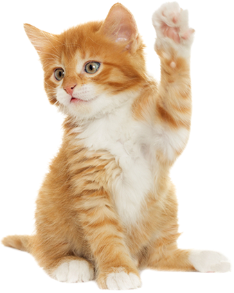

Felis Silvestris Catus

Curiositats
Els gats van aparè a la terra abans que els gossos i que molts animals que han arribat a ser domèstics, però han sigut dels últims en domesticar.
A l'antic Egipte els gats eren adorats i el rapte o la venta d'aquests animals podia ser penat amb la mort, doncs la seva labor com caçadors de gats era molt valorada.
A l'antic Egipte, si un gat familiar moria, tots els membres de la família es depilaven les celles en senyal de dol.
De fet, la paraula egípcia per a gat és "mau".
Un gat adult només miola per comunicar-se amb els humans.
Les gates, generalment, són destres, i els gats, esquerrans.
Les fosses nasals d'un gat tenen 19 milions de terminacions nervioses. L'home només 5 milions.
Els bigotis dels gats els serveixen de indicador d'espai. Els utilitzen per mesurar la distància amb un altre objecte i orientar-se.
Els gats no tenen papi·es gustatives pel dolç.
Els gats dormen una mitjana de 16 hores.
El cervell d'un gat s'assembla un 90% al d'un humà. Tenim més similituds amb ells que amb els gossos.
Els gats, amb els anys, es tornen intolerants a la lactosa.
Els gats tenen més memòria a la llarga que els gossos, sobre tot quando aprenen alguna cosa fent-la.
Els gats suen per les potes.
Els gats poden saltar fins 6 vegades la seva longitud.
Els gats fan al voltant de 100 sons, mentres que los gossos nomé 10.
Un gat té la capacitat de canviar el seu miol per aconseguir el que vulgui. Pot fins imitar el plor d'un nadó per obtenir menjar.
Els gats tenen 36 músculs en cada orella y funcionen com antenes parabòliques, dirigint-les a la font del so. I poden girar-les 180 graus.
També les poden moure per separat.
Quan un gat frota el seu cos o cap amb algú o alguna cosa és que està marcant el seu territori.
Els gats obeeixen millor a les dones perquè perceben millor els sons aguts.
La capacitat auditiva dels gats és impressionant. Són capaçs de escoltar sons a 64 kHz. Nosaltres podem escoltar màxim sons de 20 kHz.
Als gats els agrada aranyar objectes verticals perquè els relaxa, activa la circulació y tonifica el seu cos.
Un gat va ser alcalde de Talkeetna, Alaska, durant 15 anys. El seu nom era Stubbs.
I un es va postular per alcalde de Ciutat de Mèxic en 2013.
Els gats negres porten mala sort a molts llocs del món, però en Austràlia i Regne Unit unido és tot el contrari.
Els gats silben per protegir-se a si mateixos i demostrar que són perillosos, el mateix que algunes serps.
I Aquest no és l'únic en comú que tenen amb aquests reptils. Els gats, al igual que les serps, compten amb l'òrgan de Jacobson, un òrgano auxiliar del sentit de l'olfacte localitzat a l'os vómer, entre el nas i la boca. Aquest és el motiu pel que el teu gat es queda amb la boca oberta de tant en tant, per olfatejar millor.
Un gat amb la panxa amunt és sinònim de que té confiança.
Els gats no poden veure res situat sota el seu nas.
Actualment, segons el Llibre Guinness dels Rècords, el gat més vell del món es deia Nutmeg, de Texas, i el passat 2017 va celebrar el 32 aniversari.
Odien l'aigua perquè la seva pell no é bon aïllant quan està mullada.
Són experts en beure aigua i no mullar-se un pèl.
El nas dels gats és única en cada individu.
La llengua dels gats està formada per petits ganxos que els ajuden a desgarrar el mejar. Per això se sent àspera al tacte.
Els gats oculten els seus excrements en sorra per amagar l'olor i allunyar els possibles depredadors.
Dos grans conquistadors com van ser Napoleó i Julio César no les temien els exèrcits enemics, peró un simple gat els posava a tremolar, ja que els tenien fòbia.
El gat més ric es diu Blackie i la seva senyora li va deixar més de 15 milions de libres d'herència.
El gat que té el rècord de la caiguda més gran i no fatídica és Andy. Va caure des del pis 16 d'un edifici d'apartaments i va sobreviure.